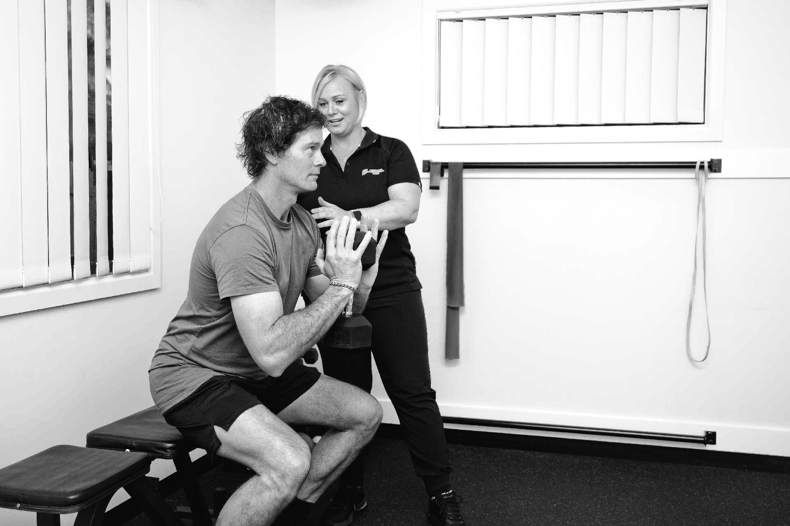

Acute or long-standing, most spinal pain responds well to the right physiotherapy — and most of it does not need a scan. We work out what is driving your pain, settle it, and give you a plan that keeps it settled.

Backs are not fragile, discs do not “slip out”, and scan findings are a poor guide to how much something hurts.
The great majority of neck and back pain has no sinister cause and improves with sensible treatment and movement. What has changed over the past two decades is how we get there. The old model — rest, avoid bending, wait for a scan, treat the picture — produced worse outcomes than the current one, which is to assess properly, reassure accurately, restore movement early and load the spine progressively.
Imaging is a good example. Scans of pain-free adults routinely show disc bulges, degeneration and facet joint changes, and the proportion showing them rises steadily with age. Those findings are ordinary, like grey hair. Ordering a scan for uncomplicated spinal pain frequently produces a frightening report, no change in the treatment plan, and a patient who now moves more cautiously than before — which is the opposite of helpful. We will tell you plainly when a scan will genuinely change what we do, and when it will not.
The other thing worth saying early: hurting a lot does not mean you have damaged a lot. A locked, spasming back can be extremely painful and structurally trivial. Pain is a protective output, and it is influenced by load, sleep, stress and how threatened you feel by the problem — which is why explanation is a genuine part of the treatment, not a nicety around it.
The most common musculoskeletal complaint we see, and one of the most treatable.
Lower back pain arrives in a few recognisable patterns. There is the sudden episode — a lift, a twist, a sneeze — where the back locks up and every movement is guarded. There is the gradual ache that builds over weeks of sitting, driving or repetitive work. There is the recurrent back that settles and returns two or three times a year. And there is persistent pain that has been present for months and has usually collected a layer of fear and avoidance on top of it.
Each responds to a different emphasis. An acute locked back needs pain relief, gentle restoration of movement, and reassurance that it is safe to move. A load-related ache needs the load addressed and the supporting capacity built. A recurrent back needs the pattern investigated, not just the current episode treated. Persistent pain needs graded exposure, education and time, and a physiotherapist willing to be honest about the timeframe.
Typically a combination: hands-on manual therapy and, where it helps, dry needling to reduce pain and stiffness enough to move properly; then progressive exercise to restore range, control and strength; then a plan for keeping it that way. The exercise component is what produces the durable result, and it is the part we spend the most effort making realistic enough that you will actually do it.
Sciatica is a symptom, not a diagnosis — irritation of the sciatic nerve or the nerve roots that form it.
True sciatica is pain that travels from the lower back or buttock down the back of the leg, often below the knee, and it may be accompanied by pins and needles, numbness or weakness. It is usually caused by irritation or compression of a lumbar nerve root, most often by a disc bulge, sometimes by narrowing of the space the nerve passes through. Not all leg pain is sciatica — referred pain from the joints or muscles of the lower back can feel similar but behaves differently, and telling them apart changes the treatment.
The good news is that most sciatica settles. Nerve-related symptoms often improve over weeks to a few months, and physiotherapy is a first-line treatment. We use positions and movements that reduce nerve irritation, hands-on treatment for the joints and muscles contributing to it, specific nerve mobility work once irritability has dropped, and then a progressive program to restore strength and control. Just as importantly, we help you manage the day-to-day — how to sit, sleep and drive while it settles.
A small proportion of cases need medical or surgical input: progressive weakness in the leg, symptoms that are not improving over a reasonable period, or the red flag symptoms listed below. We monitor for those specifically, and we will refer you promptly rather than persisting with treatment that is not working.
Neck pain has a strong occupational and postural flavour, and around Dapto that has a particular shape. Plenty of local residents commute — a short run into Wollongong, or a long one up the South Coast line or the highway to Sydney — and then sit at a desk at the other end. That is a lot of sustained flexion with the arms out in front, day after day, before you add a phone and a laptop in the evening.
The result is a familiar cluster: stiffness through the upper neck and mid-back, aching across the shoulders by mid-afternoon, sometimes headaches that build from the base of the skull. It is rarely serious and it responds well, but it needs both parts of the fix — treatment for the stiff, irritable segments, and a genuine change to the load that produced them.
Where headaches are part of the picture, the neck is often directly involved. We assess for that specifically and treat it on its own page.
Rare, but important. If any of the following apply, do not wait for a physiotherapy appointment.
Seek urgent medical care — your GP, or a hospital emergency department — if you develop loss of bladder or bowel control, numbness around the groin, inner thighs or buttocks, or progressive weakness in both legs. That combination can indicate cauda equina syndrome, which is a medical emergency.
Also see a doctor promptly, rather than starting physiotherapy, if your back or neck pain follows significant trauma such as a fall or car accident, if it is accompanied by fever or unexplained weight loss, if you have a history of cancer, if you have osteoporosis and the pain began suddenly, or if the pain is severe, unrelenting and clearly worse at night. These features are uncommon, but they are the ones worth knowing.
If you are not sure, call the clinic. We would far rather spend five minutes on the phone directing you to the right place than have you sit on something that needed a doctor.
Spinal pain overlaps with several of the other things we treat and fund at the Dapto clinic.
Vestibular physiotherapy for BPPV and balance, plus treatment for neck-related headaches.
Read moreFunding pathwayWorkers compensation physiotherapy focused on a safe, sustainable return to work.
Read moreServicePrecise needling of trigger points to release muscular tension and restore movement.
Read moreBook an assessment and get a clear explanation of what is driving your pain — and a plan to settle it.